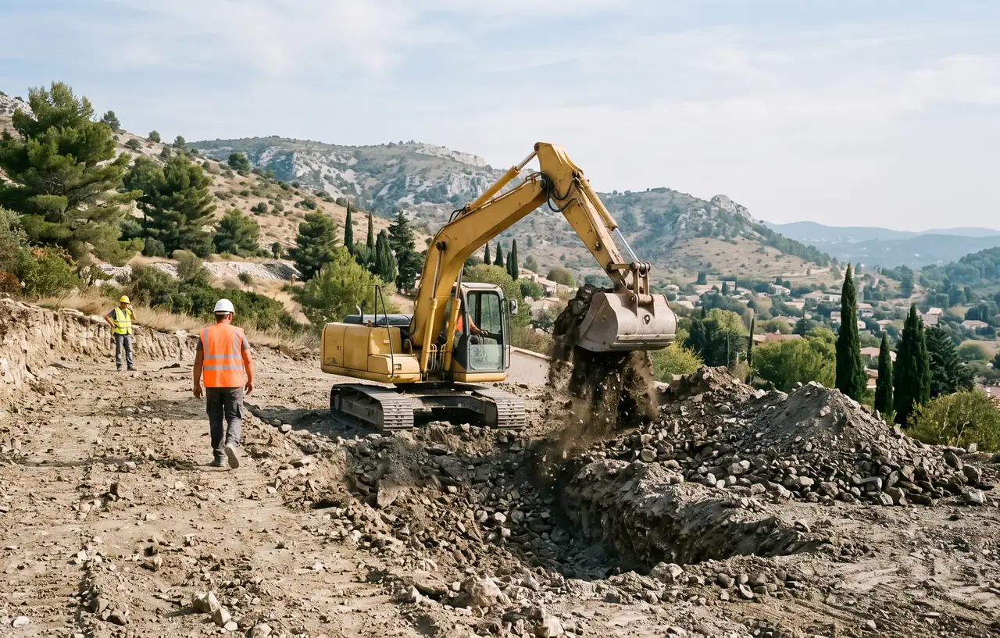
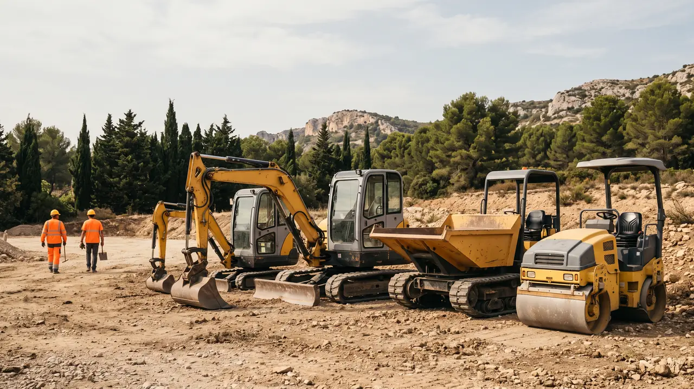
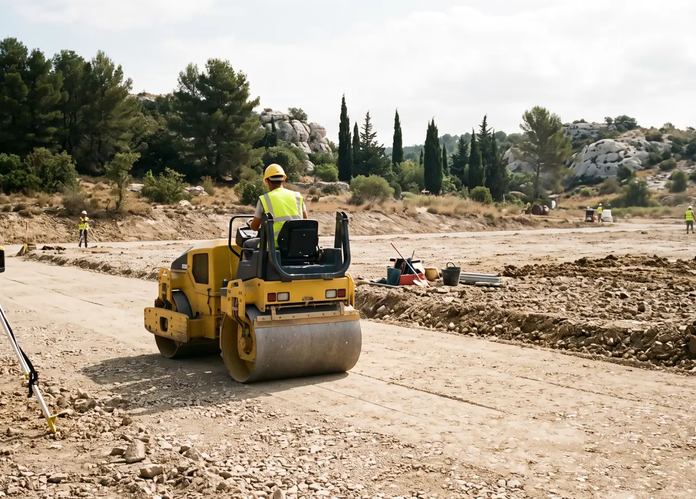
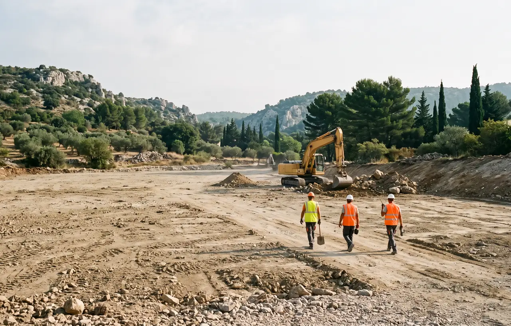

Location Mini-pelle avec BRH et Engins BTP avec Chauffeur à Bouc-Bel-Air
Les villas collinaires de Bouc-Bel-Air sont construites sur un sous-sol calcaire qui nécessite un équipement puissant pour le terrassement. Qu'il s'agisse d'excaver une piscine dans la roche, de créer une allée d'accès longue ou de préparer des fondations, le BRH (brise-roche hydraulique) est souvent indispensable. STP Terrassement met à disposition son parc d'engins équipé pour le terrain rocheux, exclusivement avec chauffeur expérimenté sur les collines boucaines. Demandez votre devis gratuit.

Minipelle 3.5T à 8T avec BRH
L'engin vedette à Bouc-Bel-Air : la minipelle 5T ou 8T équipée d'un BRH pour casser le calcaire. Nos minipelles compactes accèdent aux propriétés par les chemins étroits des collines. Le brise-roche hydraulique fracture la roche en blocs maniables, le godet de curage nivelle le fond de fouille. Un combo parfait pour les piscines, fondations et allées en terrain rocheux à Bouc-Bel-Air.
- Minipelle 3.5T/5T/8T avec BRH
- BRH extraction calcaire
- Godet de curage nivellement
- Accès collines et chemins étroits
- Location avec chauffeur CACES
Tarif : 500-850€/jour avec BRH

Pelle Mécanique 15T / 20T
Pour les travaux d'envergure sur les grands terrains de Bouc-Bel-Air : excavation de masse dans la roche, fondations de villas, démolition d'anciens ouvrages. Nos pelles mécaniques 15T et 20T développent la puissance nécessaire pour le marteau hydraulique le plus performant. Équipées de BRH, godet de curage, pince de tri selon vos besoins.
- Pelle mécanique 15T/20T
- Marteau hydraulique puissant
- Excavation roche massive
- Fondations et piscines
- Chauffeur CACES expérimenté
Tarif : 800-1200€/jour - 3500-5500€/semaine

Compacteur, Chargeuse & Dumper
Le compacteur prépare les fonds de forme des allées de villas après le terrassement. La chargeuse charge les blocs de roche extraits au BRH pour leur évacuation. Le dumper est indispensable sur les terrains en pente de Bouc-Bel-Air pour transporter les matériaux là où les camions ne peuvent pas accéder. Tous avec chauffeur qualifié.
- Compacteur fond de forme
- Chargeuse chargement roche
- Dumper terrains en pente
- Camions bennes évacuation
- Livraison sur chantier
Tarif : 300-600€/jour selon engin
Location avec Chauffeur : Indispensable sur Terrain Rocheux

Le BRH Exige un Chauffeur Expérimenté
Manipuler un brise-roche hydraulique sur le calcaire dur de Bouc-Bel-Air demande une maîtrise technique que seul un professionnel expérimenté possède. L'angle d'attaque, la force de frappe et la gestion des vibrations déterminent la productivité et la sécurité du chantier. Sur les terrains en pente des collines boucaines, la stabilité de l'engin est un enjeu majeur.
- Maîtrise du BRH - Technique d'extraction optimale dans le calcaire
- Sécurité en pente - Gestion de la stabilité sur terrain collinaire
- Accès difficiles - Acheminement et manoeuvre dans les chemins étroits
- Tout compris - Chauffeur, carburant, transport et assurance
Tarifs Location Engins à Bouc-Bel-Air
Tarifs tout compris : chauffeur CACES + carburant + transport + assurance. TVA 20% en sus.
Questions Fréquentes - Location Engins à Bouc-Bel-Air
Quel engin pour creuser dans la roche à Bouc-Bel-Air ?
Pour creuser dans le calcaire rocheux de Bouc-Bel-Air, nous recommandons une minipelle 5T ou 8T équipée d'un BRH. Le brise-roche hydraulique casse la roche en blocs maniables. Pour les roches très dures, une pelle mécanique 15T avec marteau hydraulique puissant est nécessaire. Devis gratuit.
Vos mini-pelles accèdent-elles aux propriétés ?
Oui, nos minipelles compactes sont conçues pour les accès restreints des propriétés de Bouc-Bel-Air. La minipelle 1.5T passe dans des chemins de 80 cm, la 2.5T dans 1.5 m. Pour les allées longues et étroites des villas collinaires, nous acheminons l'engin par porte-engin puis le conduisons jusqu'au chantier.
Combien coûte la location d'un BRH avec pelle ?
La location d'une pelle avec BRH et chauffeur à Bouc-Bel-Air coûte entre 700€ et 1200€/jour selon le tonnage (8T à 20T). Le BRH est soit inclus, soit facturé en supplément (50-150€/j). Tarifs dégressifs à la semaine. Transport aller-retour inclus.
Peut-on louer un compacteur seul ?
Oui, la location d'un compacteur avec chauffeur à Bouc-Bel-Air est disponible séparément à 350-550€/jour. Le compacteur est essentiel après le terrassement pour préparer les fonds de forme des allées et parkings des villas. Sur terrain rocheux, le compactage bénéficie d'une assise naturellement stable.
Pourquoi Choisir STP Terrassement à Bouc-Bel-Air ?
Spécialiste du terrain rocheux calcaire, nous proposons la location avec chauffeur de minipelle 1.5T à 8T avec BRH, pelle mécanique 15-20T, compacteur, chargeuse, dumper sur Bouc-Bel-Air et les communes voisines (Cabriès, Simiane, Gardanne). Location à la journée ou semaine, livraison sur chantier incluse. Marteau hydraulique, godet de curage disponibles. Idéal pour vos projets de terrassement et aménagement de villas. Zones d'intervention.